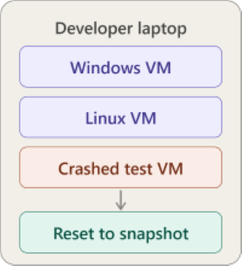
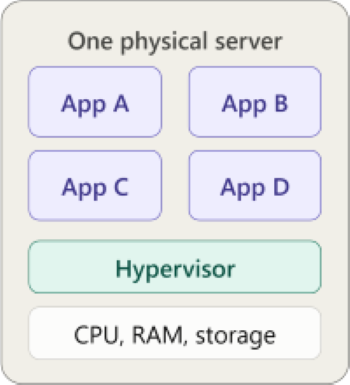
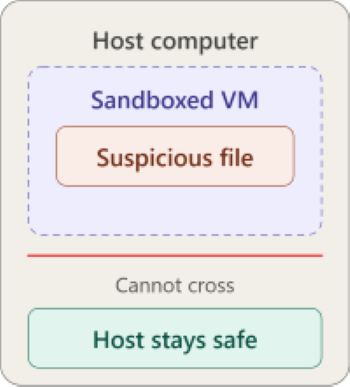

Uses For Virtual Machines
Software Testing
A developer can use a VM to test applications and their functionality on different operating systems. If something were to go wrong or break within the VM the host machine would be safe and the VM could be reset back to before the application was run.

Cloud Computing
With a VM and multiple environments, each VM can be used to run seperate applications all done simultaneously. This can be used to run the same application or different ones. A single large computing process can be broken up to have each VM work on different parts to get a faster result.

Security Testing
VMs can be used to open and examine suspicious software or known malware without risking compromising the host machine. With VMs working in an isolated environment if anything that would normaly compromise the host machine happens, it is all contained in the envirnment seperate from the host.
